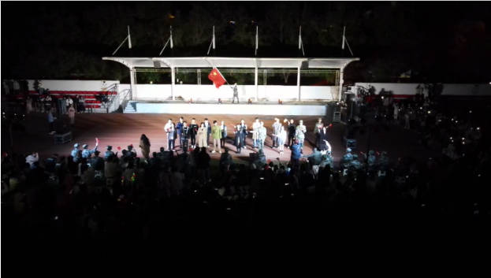

国庆潮玩在校园 草地音乐节超燃登场
青春登场，当“燃”不让！同学们期待已久的草地音乐节在这个国庆假期终于来了！10月6日至10月7日，校团委携全新校园文化活动形式——“草地音乐节”重磅来袭，校园歌手高能嗨唱、曲艺小品精彩纷呈、模特走秀闪耀校园，纪念地图及纪念明信片等，带给学子期待已久的校园生活体验。

此次草地音乐节是我校团委精心筹备的一系列丰富多样、别具新意的“喜迎二十大、永远跟党走、奋进新征程”主题活动重点活动。以青春为名，校艺术团和校园歌手大赛明星选手等才艺达人，用充满活力的青春姿态向祖国致敬，展现我校学子对祖国的祝福。校园唱跳歌手带来燃炸现场的音乐live，曲艺、配音、模特走秀纷纷登台，46个节目带来酣畅淋漓的音乐风暴，打造国庆超强音浪和沉浸式音乐体验。
草地音乐节的专属纪念品十分吸睛，让同学们在校园体验不一样的潮玩校园氛围。
挥舞着手中的国旗，用嘹亮的歌声为新中国成立73周年献上诚挚祝福，以新时代青年朝气蓬勃，意气风发的昂扬姿态，迎接党的二十大胜利召开。